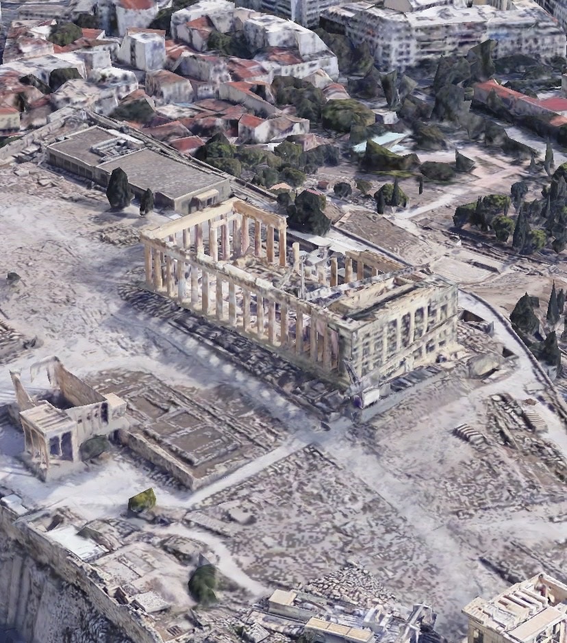

Partenon (gr. Παρθενών, Parthenṓn) – świątynia poświęcona Atenie Partenos (pol. Atenie Dziewicy) na akropolu ateńskim, wzniesiona w połowie V w. p.n.e. według planów Iktinosa i Kallikratesa pod nadzorem Fidiasza, który wykonał również elementy rzeźbiarskie.
Zbudowana z białego marmuru pentelickiego w zgodzie z porządkiem doryckim, uważana za najdoskonalszy jego przykład.
W 1987 roku akropol ateński wraz z Partenonem został wpisany na listę światowego dziedzictwa UNESCO.
Nazwa Partenon pochodzi od przydomka bogini Ateny – Atena Partenos (pol. Atena Dziewica), której świątynia jest poświęcona. Pierwsza wiarygodna wzmianka tej nazwy znajduje się u Demostenesa (384–322 p.n.e.) – nazwa ta funkcjonowała zapewne w języku potocznym dużo wcześniej. Greckie słowo παρθενών oznaczało izby niezamężnej kobiety, a w odniesieniu do świątyni Ateny początkowo było używane dla określenia jej zachodniej części.
W V w. p.n.e. budowlę nazywano świątynią – te naos, a jej architekci określali ją mianem hekatompedos (pol. „długa na sto stóp”) upamiętniając wcześniejszą świątynię stojącą w tym miejscu w okresie archaicznym. Plutarch (ok. 50–125 n.e.) używał nazwy Hekatompedon-Partenon. Grecki geograf Pauzaniasz stosował nazwę Partenon.
Budowa
Świątynia została wzniesiona z inicjatywy ateńskiego polityka i stratega Peryklesa (ok. 495–429 p.n.e.) w ramach jego programu udekorowania imperialnych Aten finansowanego z budżetu Związku Morskiego. Gmach zastąpił wcześniejszą świątynię zniszczoną przez Persów w 480 roku p.n.e., która z kolei stała w miejscu pierwszego Partenonu z ok. 570 roku p.n.e. w południowo-wschodniej części Akropolu.
Prace prowadzili architekci Iktinos i Kallikrates, którzy współpracowali blisko z Fidiaszem – według Plutarcha Fidiasz nadzorował prace nad budową akropolu. Budowa rozpoczęła się w 447 roku p.n.e. – gmach został ukończony w 438 roku p.n.e., a dekoracje zewnętrzne w 432 roku p.n.e. Fidiasz, współpracując ze swoimi uczniami Agorakritosem i Alkamenesem, stworzył bogatą dekorację rzeźbiarską. Sam wykonał także w technice chryzelefantynowej olbrzymi posąg Ateny Partenos, który zdobił wnętrze świątyni. Budowla przetrwała wieki w nienaruszonym stanie.